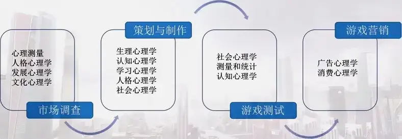

第六章 研究方法
6-1 10 个有趣的研究
同学们大家好，欢迎大家回到游戏心理学的慕课。
从这节课开始，咱们一起来看一看有关于游戏测试和实验研究相关的问题。在前面的课程里咱们提到过很多实验，其实心理学研究也应该从研究方法开始讲起，咱们前面的课程算是带着大家了解和入门，现在再一起来对研究方法做一些讲解，大家可以在这个基础上对前面讲的实验再做一些回顾。
讲回游戏，在十年前的游戏开发者大会上曾经公布过一些游戏研究界的调查项目，它们对游戏开发者思考和制作游戏的方法已经产生了一定影响。我们也通过回顾这 10 个老项目来看一看游戏界有哪些有意思的研究：
1、游戏的成败如何影响玩家的参与度？（赫尔辛基商业学院的 Niklas Ravaj 等）这项研究认为失败对玩家来说也非常重要。他们用《超级猴子球 2》为调查材料，研究玩家在这个对战游戏中的成功与失败对参与度的影响。他们提出了“违反直觉的理论”，也就是参与者遭遇主动失败时甚至比获得成功更高兴更兴奋。而被动的失败却会影响玩家对游戏的参与度。
2、开发者如何结合语言和情感变化来呈现面部表情？（加州大学洛杉矶 Y. Cao 和南加州大学 W. Tien、P. Faloustos 和 F. Pighin）这是一项应用技术性研究。角色说话的时候会改变面部肌肉运动这在游戏中很普遍，但是我们在不同情感状态下说话的面部表情也会有所不同，因而**如果面部表情能够与情感+言语相符，就能够更令人印象深刻，而且更具真实性。**这个研究让游戏开发者可以尝试指定情感叠加语言来生成面部表情。
3、眼睛追踪设备，和其他控制器能否提供比鼠标控制更为有趣的 PC 游戏体验？（瑞典皇家理工学院 Erika Jonsson）研究者发现当玩家使用研究追踪设备来配合鼠标控制时，他们能从《半条命》中体验到更多的乐趣。使用眼睛追踪设备是个绝妙的方法，有证据表明这是个很有效的功能。研究参与者在使用眼睛追踪设备时能够在游戏中获得更高的分数。
**4、网游中的玩家交流存在什么样的策略呢？**游戏能够为这些策略提供更好的支持吗？（芬兰奥卢大学 T. Manninen 和 T. Kujanpaa）研究者调查时所使用的游戏是《战地 1942》。这项研究发现玩家希望以游戏还没有提供支持的方式进行交流，想要用游戏机制没有提供支持的方法与队友合作。比如，玩家想要在游戏中用肢体动作给其他玩家发出信号，想要采用暴力冲突之外的方式与其他玩家互动。玩家对这些新型交流方式有需求，其实也是对更加接近现实的交流方式的需求。
5、现有的玩家控制视角能够使用何种创新型的游戏设计？（佐治亚理工学院 Michael Nitsche）在这项研究当中，研究者关注的是玩家如何去控制镜头。玩家控制镜头的这种交互叙事在游戏中还不是那么完善，它从电影语言中来，但是又不能完全等同于电影的镜头语言。其实这个研究对当下的 VR 形态的游戏叙事也是很有启发的。
6、游戏玩家是否像开发者预想的那样在游戏中作弊？（斯坦福大学 D. Miller 等）这个调查其实并不是利用某一个游戏来做的，但所得结果可以应用到游戏设计里。研究是把一个观察者放在一场考试当中，当这位观察者被告知说：某个学生有很大可能会作弊的时候，观察者会声称他们见到了那个学生作弊或者有作弊的嫌疑，而实际上这个学生是被安排好不会作弊的。那么对游戏来说，我们能够认识到感知的重要性，对于多人游戏来说，总会存在对公平性的质疑，这种时候，感知通常比现实更为重要。
7、其他玩家的存在感能否提高网游的真实性？（克利夫兰州立大学 C. Campanella Bracken 等）研究者尝试了 Xbox Live 上的一些游戏，比如《光环 2》等等，他们发现说协作是情感粘性的强大推动力。调查结果显示，对那些每周至少玩 12 小时游戏的玩家来说，单人游戏并不会让玩家感觉到强烈的存在感。而玩家间的协作则能够产生最为强烈的存在感，这意味着，当玩家与其他玩家合作去实现目标时，他们会产生巨大的社群感。
8、体感和手势控制器对游戏可玩性是否有益？（佐治亚理工学院 S. Griffin）研究者讨论的是体感和手势控制等新型控制器的优点和缺点。从理论上来说，这些设备应该能够推动玩家动起来。在目前的技术阶段来说，标准游戏手柄通过玩家通过操纵手指来控制屏幕上的移动，而这些新型控制器需要玩家动用整个身体。这在简单的输入任务当中很有趣，我们看到有切水果这类的游戏，而当需要输入的动作复杂且富有象征性时，简单的按键按动的效果却更好。游戏开发者可以考虑姿势控制和象征控制或者说手柄控制之间间的平衡性问题。
9、玩家对语音聊天及其在游戏可玩性中的作用有何看法？（墨尔本大学 K. Hew、M. R. Gibbs 和 G. Wadley）研究者关注的是玩家觉得烦人的听觉反馈，比如噪音、还有他们不希望听到的对话。换句话说，差劲的语音聊天会影响到玩家的社交意愿，破坏语音聊天最初的目标。调查参与者会慢慢适应周围使人分心的噪音，但是当声音变得难以忍受的时候，他们通常都会马上摘下耳机，宁可不听任何游戏声音，也不要被噪声折磨。
10、音乐如何影响玩家对游戏的感受？（格拉斯哥卡利多尼亚大学 G. Cassidy 等）研究者发现高情绪化的音乐与玩家对游戏的感受并没有联系。然而，**当玩家可以自行挑选播放的音乐时，他们在游戏中成功的可能性会增加，而且对游戏行为的情感反应也更为强烈。**音乐不仅关乎情绪影响或游戏世界的构建，它们也会影响到玩家的成功与否。
这些研究结果有的与我们的常识一致，也有的出人意料。但如果不通过调查研究和实验，我们永远无从验证这些常识的正误。在任何领域，科学的研究方法都是至关重要的组成部分。心理学提供了一种思考的方式，理解这种方式对帮助我们解决游戏行业的所有问题都具有巨大价值。游戏心理学教学的终极目标是教会学生如何以一个科学家的方式去思考玩家的行为，如何以科学的态度和方法来解决游戏从设计到营销各个环节遇到的问题。
从下节课开始呢，我们就来介绍这些方法，希望能够对大家有所帮助。
6-2-1 研究方法 1
同学们大家好，欢迎大家回到游戏心理学的慕课。
这节课咱们从基本的研究方法开始。
首先来说，我们一直强调心理学是科学，对心理学的研究也应该使用科学的方法，那么实证观察和自我纠正是科学方法的两个特征。无论是偶尔的观察还是系统的观察都能推进理论的产生，这个理论会反过来影响实证工作，形成一种循环和自我纠正。任何在科学中所使用的方法都有某些基本因素，其中最重要的就是数据（实证观察）和理论（对概念的整合，并对事实作出预测）。
graph LR
理论 --> 演绎演绎 --> 数据数据 --> 归纳归纳 --> 理论
科学家强调数据的重要性，并把科学看作是一个从数据到理论的过程，这是归纳法，是从具体数据到总体理论的过程。相反的一种方法是强调从理论到数据的过程，即演绎法。归纳法和演绎法各有所长也各有缺陷，因此我们需要整合归纳和演绎，不断自我纠正。
接下来介绍的几种基本研究方法：观察法、相关研究、以及实验法。这节课我们先来说观察法。
科学能够不断积累，主要原因之一就是科学家追求尽可能准确地去观察世界。科学的自我修正要求科学家提出理论和假设以便预测在特定情况下会发生什么。这些想法可以通过比较假设和实验数据来验证。如果观察数据和预测很不一致，就需要修改或放弃理论。
在心理学研究中最显而易见的观察方法是描述行为，列举会发生什么行为以及行为的数量和频率。收集心理学数据的描述性观察方法有三种：自然观察、个案研究、调查研究。以研究玩家在游戏中的行为为例，简单观察玩家行为能使我们获得对特征和行为范围的总体印象。而更系统的方法则是先定义研究中不同类型的行为，然后记录每种行为发生的次数。行为详述是相对完整的关于一个或一类玩家的具体行为列表。通过研究特定行为发生的次数对行为的意义有更好的理解。一个完整的行为详述是理想化的，不太可能在实践中实现。如果没有一定的假设，那么对某一大类行为进行确定和分类就会很麻烦。
个案研究也是心理学研究中非常有价值的研究方法，弗洛伊德的精神分析理论就是通过对个案的观察而得到的。一般来说，**个案分析是对某些行为的深度调查，是自然观察的一种，具有自然观察法的所有缺点和其中的一些优点。**一个主要缺点是从个案分析中我们不能推断出什么是原因什么是结果，人们能做的只是描述事件本身。不过个案分析常常能让研究者获得关于原因和结果的一些合理猜测。能够把推论困难降至最低的一种个案分析是偏差案例分析法，研究者比较两个多方面相似但是结果不同的案例，去研究造成不同结果的因素。但只有一种因素不同的两个案例很少，同时这种方法推出的结论不一定是最好的，因为研究者找到的因素不一定是最关键的。个案研究通常只涉及很少的参与者，而且通常这些参与者不能很好地代表所有人。因为调查法获得的结果是描述性的，所以在心理学的大部分领域，测量并不常用。现在有比较准确的取样方法，使得我们可以用少量人的信息推测大部分人的情况。
调查法的关键问题是调查的取样，研究者希望获得能够代表他们想测量的总体人群的样本。选择有代表性样本的一种最好的方法是随机取样，使每个人都有相同的概率被选为被试。
调查、访谈和测验面临的最大问题是自愿问题。志愿参加的被试可能和其他不愿参与的潜在被试有差别，更好的适应性、更好的教育程度等或许会影响调查的结果，或限制实验结果的普遍性。**测验或调查乏味的话会让被试变得不合作，而让我们得到的数据存在偏见。**解决这些问题通常有三种方法：一是像我们前面提到的对被试总体进行随机抽样，二是对不合作的人一些额外激励（更多实验信息或劳务报酬），三是用另外的潜在被试样本来重复实验。
巧妙地运用调查可以为心理学的某些领域做出贡献，在游戏心理学和游戏产业的研究中，我们会多次使用不同形式的调查和测试，这部分内容我们后面课里再讲。这节课就先到这里，下次课再见。
6-2-2 研究方法 2
同学们大家好，欢迎大家回到游戏心理学的慕课。
这节课咱们继续讲另外两种基本的研究方法。
首先是相关研究。在相关关系的研究里，我们用一个统计量就可以同时确定相关的程度和方向。在相关分析中往往很难确定变量的因果关系，我们会先讨论相关系数，再分析如何来解释结果。
大家去查阅其他研究者的研究就会发现，虽然相关系数有几种不同的类型，但它们几乎都有一个共同的特征，即范围都是从-1 到+1。相关系数绝对值的大小表明相关的程度，符号表明到底是正相关，还是负相关。
比如假设说我们研究发现在游戏中氪金的玩家游戏的时长会增加，那么我们就说氪金与游戏粘性存在正相关，当一个变量增加时，另一个变量也跟着增加；而如果发现说在游戏里经常战斗失败的玩家，他的游戏时长会减少，那么我们会说游戏挫折与与游戏粘性存在负相关，当一个变量增加时，另一个变量则会随之减少。
但需要注意的是：**即使两个变量间存在高度相关，也不能由此推断这两个变量间存在因果关系。**我们不能得出结论说一个因素引起或导致了另一个因素，因为许多因素可能与我们所感兴趣的那两个因素同时发生着变化。在实验中我们试图通过直接操作一个因素，使其他因素保持不变来避免这个问题，但这样做是有难度的，我们不知道其中一个因素还是另一个因素或者是两个因素共同引起了一些效应。
而对于弱相关的解释就需要更加谨慎。有时呈现若相关的两个变量之间没有因果关系，但也有可能是其他一些因素导致了两个变量间的弱相关或零相关，并遮盖了它们之间的真实联系。
同样，相关分析中也会存在反应性。参与测试者往往不是被动地对研究者的调查做出反应，实际上他们经常试图猜测测试的目的，并按照他们对该调查的直觉来做出反应，并尽量使自己的反应在研究者看来是最好的。
虽然有各种潜在的问题，但是相关法仍然优于描述性方法，因为应用相关的方法，两个变量间相关的程度可以精确计算出来。
最后来看实验。实验是为作出因果解释而设计的检测，如果结果 X 伴随一个事件 A 出现，并且 A 和 X 同时变动，同时如果可以看出事件 A 产生了结果 X，那么可以推出因果关系。要达到这些条件，必须使用联合法。在联合法中，如果 A 发生，那么 X 也会发生，如果 A 不发生，X 也不发生。实验的标志是控制一个变量的出现和不出现，并比较其不同点。在实验里我们通常会分两个组，把对自变量进行操作的一组被试成为实验组，不做处理的一组被试叫做控制组或对照组。
在实验开始前，我们还需要仔细考虑三种变量：自变量、因变量、控制变量。
**自变量是由实验者操纵的，它的具体形式与数量都是由实验者决定的。**因此实验者也有可能没有对自变量进行有效地操纵，比如将食物作为自变量时，被试有可能因为已经吃得很饱而对奖励无动于衷，这就是为什么前面讲的动物实验总会在实验前让动物饿上一段时间。
**因变量是实验者要观察和记录的变量，它依赖于被试的行为，进而依赖于自变量。**优质的因变量的一个标准是信度，当一个实验用同样的被试、同样的自变量水平重复时，因变量的记录值应该和前次是相同的。信度就是指行为测量的一致性。如果测量因变量的方式存在缺陷，则会发生低信度的现象。无效结果经常是由于因变量的一些缺陷引起的，即使它们有信度。最普遍原因是因变量受到限制或处于有限范围内，这就是所谓的地板效应（不能更糟了）和天花板效应（不能更好了）
**控制变量是一个在实验过程中保持恒定的潜在自变量。**它因为收到实验者的控制而没有发生变化。对任何一个实验而言，一般都会有比现实已经控制的变量更多的控制变量。在实验室外做的研究中，保持控制变量恒定的能力也会大幅削弱。实验中出现无效结果也有可能是这些因素没有足够控制，导致它们出现偏差。
在实验中啊，也会存在被试的反应性问题。如果我们对陌生人说：“能帮我个忙，玩玩这个游戏吗？”或“我在做一个心理学实验，能请你帮我个忙，玩玩这个游戏吗？”比较两种方式，第一种方式下，极少人会顺从我们的要求，但第二种方式则更容易得到支持。**我们会在科学和实验的名义下做一些事情，这些事情在普通情况下我们可能不会做。**换句话说，实验可能不仅仅是检验行为，也可能造就行为。进入实验的被试会对产生的结果有自己大概的想法，并尝试理解实验的具体目的。这跟咱们前面讲的也是一样的。
介绍了三种基本研究方法，我们看到，心理学观察通过描述行为将两种或多种行为之间进行联系，并通过实验解释引起某种行为的原因以达到科学的理解。那么这里啊，如何知道我们的描述、联系和解释是好的，又依赖于前面提到信度，以及反映观察真实性的效度。效度呢一方面来自内部，另一方面也来自于外部。
内部效度是一个实验能否做出两个变量之间的关系是因果关系的结论，外部效度是说研究情境及被试群体所得结果，能够普遍推广到其他情境及总体中，无外部效度的观察结果，就会被限制在原始的研究情境和参与者群体中。
这节课讲的稍微多一点儿，大家还需要对照实际的研究来进行深化。咱们下节课来看看游戏测试相关的问题。
6-3-1 游戏测试 1
同学们大家好，欢迎大家回到游戏心理学的慕课。
在看这门课视频的同学可能都是有一个游戏梦的，将来大家或许能够成为实现游戏机制和系统的大师，但我们没办法在没有实验证据的前提下，真正了解自己的游戏有多好。因为游戏更关注的是玩家在游戏中的体验而非系统，虽然系统通常都很清晰，但是玩家对游戏有怎样的感受却总是难以捉摸。我们或许能够很好地设计游戏，但如果不能正确收集数据，就可能会出现设计上的偏差。
所以说一个游戏最初的版本可能 3 个月就做好了，但我们可能需要比 3 个月长几倍的时间进行测试、修改和完善。我们有时候觉得测试游戏可能很好玩，可它是工作的一部分，所以除了自我陶醉之外，我们更应该用严谨的态度和科学的方法确保自己有效测试游戏。
游戏测试是针对于游戏的研究，我们需要秉承心理学的研究方法，又需要结合游戏设计开发的特点进行有针对性的设计。我们的目的是通过测试找到当前设计的问题，根据这一信息进行迭代和优化。
所以每次测试都是获得宝贵数据的机会。咱们前面提到过，实验要有目的，那么测试也要有一个目标和假设。毕竟有限的测试无法覆盖所有内容，有了明确的目标我们就能更准确设计测试内容并找准测试对象，最重要的是在获得测试数据之后对反馈信息进行取舍。有时候，游戏测试会得到一些我们从未预料到的结果，如果我们没有理清测试目的，难免就会瞄准和解决所有发现内容，致使自己超前考虑一些后面阶段才应该烦恼的问题。
好，那么在测试开始之前，我们需要根据测试的目标来决定是进行在线测试 还是离线测试。这两个模式都有其利弊。在线测试其实是一种跨空间的测试，有更大曝光度，能够覆盖更多玩家，且不会耗费额外时间。但我们需要完成更多的内容，要做数据回收的程序来保证获得希望的数据。而离线测试更多时候能够制定比较高的检验标准，准确获得特定玩家游戏时的数据，更有针对性地测试某些问题。同时，离线测试需要让参与者聚集至同一房间，并且由于时空限制和工作人员数量的限制，测试玩家的数量也会受到限制。
有的同学说了，我听说游戏测试其实是要进行很多次，有离线的也有在线的。在游戏开发过程中，我们会经历多个测试阶段。游戏测试在不同阶段会有不同目标，明确阶段性差异会帮助我们更加有的放矢。
早期创意测试阶段：早期测试的材料可以是一个极为粗糙的原型，目标也很简单：**这款游戏是否值得投入时间继续创作？**我们可以把游戏展示给设计团队以外的其他人，包括身边的亲友或陌生的玩家，他们可以体验到原型传达的最直接的信息，并看到原型中同游戏核心理念完全不相称的视觉和体验元素。如果测试者在探索游戏理念的过程中充满乐趣，并且乐于提供关于如何玩核心机制的建议，那就说明游戏值得深入探索。早期创意测试的内容可以包括：构思测试（基本游戏构思是否有趣？什么是保持其趣味的元素？）、游戏模式测试（应采取什么游戏模式？多人模式是否可行？）、关卡模式测试（关卡设置是否合理？）、指导性发现（我们应如何把玩家变成有效玩家？实现此目标的首选方式是什么？）
**结构不确定性测试阶段：当我们决定专注投入制作一款游戏时，就该开始筹划游戏的基本结构。**在建立游戏核心概念之后，其他元素仍然要经过测试才能最后敲定。游戏是否用到卡片或是骰子？玩家是否应该在几个轮回之间进行切换？游戏结束的触发器是什么？用测试反馈来回答这些问题，保持游戏友好、直观、节奏合理，进而围绕游戏核心做出这些最根基性的决策。
**易用性和规则测试阶段：游戏的易用性不仅是对玩家友好态度的体现，更是游戏性基础中的基础。**我们要邀请此前从未玩过这个游戏的新玩家进行测试，确保他们可以快速上手。另外还要写下规则，让玩家在无需指导的情况下自己通过手写的规则了解游戏。不过也可以适当解释规则，以便玩家快速了解游戏趣味，但多数时间我们一定要坐在玩家身后，观察玩家是如何在我们设定的规则之下来玩游戏的，这会是很多玩家可能的游戏体验。这个过程中我们会发现好多我们自己测试时候绝对不会发现的问题。然后再针对这些问题进行迭代优化可以确保游戏体验顺畅。
**平衡测试阶段：如果条件允许，最后找到一两个比较有深度的测试对象，让他们多次试玩，来确保游戏的平衡性经得起时间考验。**如果连愿意深入探索游戏策略的测试者都找不到，那么这款游戏可能就没有生存的空间了。此外还可以进行关于游戏优化的各项测试，以便帮助我们进行关卡设计优化（此关卡是否有趣？是否存在任何无趣内容？）、机制调整（强化重力设置，效果是否更佳？）、发现漏洞（它们是否会破坏游戏？以何种方式？）、图像和音效测试（各种音效是否充足？图像和音效是否有向玩家传递正确信息？）
明确了不同阶段测试的目的之后，第二个要斟酌的问题就是，我们**需要根据测试目的来确定测试对象群体。测试对象的年龄、性别、游戏技能、是否玩过类似游戏之类的因素在都是非常重要的。**性别、年龄等因素并不是选择测试对象的首要条件，但这些数据会方便我们测评不同市场的玩家兴趣。
然后呢，玩家游戏技能水平的差别也是我们多数时候需要考虑的元素。如果说我们要测试游戏设计的核心机制是不是有意思，那么我们应该邀请熟练程度如何的玩家来参与测试呢？是越熟练越好。因为熟练的老玩家能够快速掌握、控制装置，理解游戏机制，然后进行反馈。同时老玩家因为经验丰富，也更善于发现游戏中的不平衡元素而且能够表达出来。
那么如果我们希望得到关于游戏新手教学设计是不是合适的测试数据，那么最好就邀请那些不怎么玩游戏或者干脆没有玩过游戏的人。如果这些新得不能再新的玩家能顺利融入游戏，那么几乎所有人就都没问题了。不过与此同时啊，我们还需要测试其他类型的群体，因为除了照顾新手玩家之外，也需要去验证新手教学系统是否会让资深玩家感到厌烦。
这些呢，都是一些经验之谈了，明确目标，决定方法，找好测试对象。这三步先走稳，才能谈后面的数据分析的工作。
这节课咱们先讲到这里，下节课咱们具体来看看两种常用的分析方法。
6-3-2 游戏测试 2
同学们大家好，欢迎大家回到游戏心理学的慕课。
这节课咱们继续来说数据分析。
游戏测试中的数据分析工作相当重要，也是评判测试好坏的关键因素之一。如何分析数据多半取决于测试目的。
一般来说，需要成为结论依据的初期测试最好主要参照定性数据，而后期的在线测试最好主要参照定量数据，用以调整和完善游戏设计。
很多定性数据都包含在定量数据中，**定量数据在测试玩家不同时刻情绪方面最有效，定性数据能够更有效发现玩家感受以及如何进行修复。**更多情况下，定性与定量分析仍需结合进行，只是不同阶段的侧重会有所差别。
我们先来看一些常用的定性测试的内容：
- 有趣和枯燥的部分
- 困难和简单的部分
- 是否有玩家不理解的内容
- 难度曲线是否幅度过大
- 硬核玩家是否觉得过于简单
- 新手玩家是否觉得过于困难
再来看一些常见的定量测试的内容：
| 测评内容 | 说明 |
|---|---|
| 各关卡死亡数量 | 调整关卡难度 |
| 玩家位置 | 判断是否存在 bug，或创建受欢迎的地图 |
| 道具使用数量 | 发现制胜策略，或者武器是否有效 |
| 玩家何时升级 | 难度和数值平衡 |
| 完成关卡的时间 | 调整游戏关卡排列时序 |
| 选项 | 调整选项使玩家选择多样化 |
| 何时退出 | 在线测试最有效，评判关卡难度和真实评价 |
| 评级 | 请玩家对关卡中的难度、有趣性和通俗性进行评级，能够快速获得数据，把定性问题转变成定量性质 |
| 等级 | 让玩家根据内容难度、趣味性和通俗性由低到高排列关卡/机制/游戏目标 |
通过具体例子的比较，大家是不是能更理解，什么是定性，什么是定量了？
有同学可能会问了，这里是不是还涉及到离线测试的数据怎么收集的问题？
收集数据其实可以有很多手段，包括测试电子游戏时候我们让游戏程序自己做记录然后输出保存成文件，还包括我们请被试来做预先设计好的问卷，对他们进行访谈，这些大家都不陌生。那么可能会比较容易忽视的是什么呢？是在被试正在玩游戏的时候，进行相应的人工记录，详细地写下当时发生的所有事，或采取更好的方式：拍视频。
记录测试过程之后，我们就可以反复地回头看视频，这也许能发现被我们当时忽略的有价值的信息：比如说，玩家做的第一件事是什么？玩家熟悉操作用了多久时间？玩家使用某个功能多少次？一边手动记录这些事，一边玩家在做什么是非常困难的，而拍摄后再观看视频就简单多了。另外，视频也是存档。在我们低头记笔记的时候，很可能会错过重要的细节。
除此之外，记录还可以作为下一次测试的比较和验证工具。比如说，第一次测试的时候我们发发现，大多数玩家对界面的理解存在困难，那么回来我们可能就会去修改游戏，然后再次测试。那么通过比较两次测试的数据，我们可以很直接地检验出修改是否有效。
好的，那么这节课呢，咱们又往前走了一步，来考虑了要来收集哪些数据，要用这些数据分析什么问题。下节课我们再来看一看更细节也更重要的问题：怎么提问。
6-3-3 游戏测试 3
同学们大家好，欢迎大家回到游戏心理学的慕课。
这节课咱们来说一说该怎么向被试的玩家提问。
有同学说了，老师，提问这个事也太容易了吧？我已经明确的测试的目的，我就直接问不就行了吗？
确实，提问不难，我见过很多同学在去测试自己游戏的时候，会问来试玩的同学：“你觉得这个游戏有意思吗？”“你理解游戏规则吗？”“你觉得游戏公平吗？”“你认为游戏太难还是太容易？”大家觉得这些问题怎么样？如果这样问你，你会怎么回答呢？
“你觉得这个游戏有意思吗？”
“我觉得挺有意思的！” 好吧，那然后呢？这就能说明游戏是完美的可以发布的了吗？
如果你回答：“我觉得没意思！”好，那我们应该修改一下。但要怎么做？改什么？
所以大家看出来吧，向来试玩游戏的测试人员提问，我们的目的是获得作为开发者无法通过自身角度所得到的对于游戏的洞察。我们玩自己的游戏，无论是解谜也好，叙事也好，战斗也好，都因为我们已经知道了接下来会发生什么，而很难去从一个新玩家的角度去看待游戏，很多问题我们是灯下黑，可以说是视而不见的。所以测试时候的提问，其实也是在让我们从一个尽量客观的角度来看待自己的游戏，即使是要做定性的测试，也要找一些能够被量化的问题，通过数据来进行分析。
在游戏行业，已经有很多开发者在测试这个环节做了很尝试，总结了一些经验，我们可以学习和借鉴。基于这些问题，我们可以进一步设计和迭代出适合自己游戏测试的问题。
1、你觉得自己玩了多长时间？
可以将这个问题取代“你觉得有意思吗？”之类的问题。如果我们真想知道自己的游戏核心机制是不是有意思，这个问题可以让我们获得一个比单纯提问玩家是否觉得有意思更准确的答案。我们前面讲了沉浸理论，沉浸理论的一个重要的指标就是说玩家会丧失时间感，会忘记现实的时间而沉浸在游戏里。所以我们可以记录玩家实际玩游戏的时长，如果他们觉得时间过得很快，那就说明他们乐在其中。如果他们觉得度日如年，那他们就有可能是在游戏里觉得体验并不那么好了。
2、是否觉得自己在同其他玩家交朋友或者交战？
这个问题只适用于多人游戏，但问题的答案将让我们更了解自己的游戏所创造的社交氛围。如果游戏具有高度的竞争性，寻径玩家回答就应该体现一种竞争感。而如果游戏具有协作性，玩家却觉得他们在相互竞争，那就说明游戏机制并没有提供我们所希望呈现的社交氛围。如果我们并没有刻意渲染社交氛围，而玩家却认为他们在交朋友，这可能也是个意外的收获。
3、你可以不看规则重玩游戏吗？
有时候这种情况是不可能发生的，因为极为复杂的桌面 RPG 总是含有地下城手册，但如果玩家理解回合步骤，如出牌、丢骰子，移动棋子等重复机制，那就说明规则设置妥当。要根据游戏的情境调整这个问题，但这个问题的确值得一提。如果玩家每次轮到自己时都需要再看一次规则，那么我们可能就需要想想是否该简化规则或者设计一种更清晰、可记忆的规则表达方法。
4、你的战略是什么？
让玩家演示一遍他们的玩法战略，分解他们的思维过程，这样可以让我们看出整个过程中是不是有什么问题，以及我们的设计在哪些方面有助于促进玩家对游戏流程的理解。有些测试玩家会说他们没有什么玩法战略，对此反应的一个正解就是他们刚接触游戏，并不能看出什么清晰的战略，或者游戏并不能促使他们创造自己的策略。如果玩家能够分解自己的思维过程，我们也就可以评估他们的策略，然后对游戏的难度或者 AI 进行调整。
后面还有 6 个问题可以给大家借鉴，咱们下节课继续。
6-3-4 游戏测试 4
同学们大家好，欢迎大家回到游戏心理学的慕课。
这节课咱们继续来说该怎么向被试的玩家提问。接着上节课的编号，今天从第 5 个问题开始。
5、你可以提前多少步预测对手的行动？
这个问题与前一个问题相似，它可以让我们了解玩家对游戏策略的理解能力。但是这个问题与玩家策略的复杂度及玩家投入游戏测试的深度密切相关。如果对手完全无法预测，这可能意识着游戏对玩家来说太复杂了，或者游戏需要改进和响应性。如果对手的行动太容易预测了，这就意味着游戏具有可预测性，并且很简单。这可能产生井字棋效应，即游戏一开始就有可预测的结果，或者总是打成平局。井字棋大家都玩过，玩几局之后就会很快掌握策略，占中间再占一个角，对吧。如果你还没总结出规律，赶紧暂停视频，玩一下。
6、你回应对手行动的程度如何？
这一点相当于前一问题的扩展问题，它让我们更进一步了解游戏战略的节奏。如果玩家可以预测到对手行动，但却并不觉得有必要通过改变自己的策略来回应对方，那么我们就要质疑玩家与游戏或者对手的互动是不是有意义了。我们该如何创造一种让玩家被迫回应对手行动，从而产生有意义交互行为呢？最简单的石子剪子布的游戏，却因为要猜测和回应对方的行为而变得特别有策略性，这是我们遇到瓶颈的时候可以去返回来思考的一个问题。
7、你能否解释玩家胜利的原因？
这个问题相当于第 4-6 个问题的修订版本，它肯定了玩家对游戏的战略性思考的理解，同时还有另一个目的：如果玩家可以成功回答这个问题，也就等于肯定了游戏中的动态战略思维，也确认了我们的确向玩家呈现了足够的信息，让他们能够了解对手行动从而做出合理的反击。因为有时候玩家发清楚何时及如何做出反击，但并没有关于对手的足够信息（例如有视野限制，有太多随机性之类）。如果玩家能够认识到自己的战略、优势和劣势，那么我们就知道玩家是针对这些信息作出了反应，这些反应有些可能是合理的，有些可能是不太明智的。
8、你觉得自己控制游戏结果的把握有多大？
这个问题其实会取决于我们想让玩家感觉自己获得多少控制权。一个平衡性比较好的游戏，会让玩家能够按自己的想法来实施最理想的决策。如果玩家犯了错误，就应该有相应的惩罚，而对玩家正确行动就要有相应的奖励，这在行为主义的部分咱们反复说过。如果玩家觉得游戏太多时候要靠运气，或者觉得另一名玩家在游戏里更有优势，那我们就应该检查玩家制定决策的过程对游戏结果的影响程度了。是不是存在这种数值的不平衡让某些玩家的力量能够掌控全局而导致其他玩家根本撼动不了？游戏是否过于依赖骰子或抽牌的随机性？或者游戏的随机性还不够？
9、是否有什么因素阻碍你制定自己的战略或计划？
在游戏当中，敌人采取的一步行动或反击，是不是阻碍了玩家深入推进自身策略？玩家是否想要贯彻一个特别想去实践的玩法，但是受到资源限制而无法实现？玩家是否长时间的万事俱备，但一直处于只欠东风的状态？根据游戏情境的不同，这个问题的答案可能会有主观性的不同理解，在俄罗斯方块里，堆好了很多层就等着长条的状态是玩家经常会提的一个梗。但如果我们自己的游戏，反复多次听到玩家的抱怨那么就要注意了。也许游戏的资源生成机制不一致或者太稀少，我们可能需要对随机性机制做出更多辅助性的平衡。
10、请列举与你试玩的这款游戏最为相似的其他游戏。
这是一个简单的问题，可能从玩家那里得到易被疏忽的反馈，但有时候我们设计了一款针对特定群体的游戏，最后却会发现它偏离了目标。如果玩家可以分清我们的游戏和其他游戏之间的不同和相似，那我们就可以确定自己瞄准的目标市场是准确的，也就可以分辨出让玩家感受最深的是游戏的控制机制、还是回合顺序、还是核心机制，以及他们的来源，再根据未来玩家已知的信息开发出能更好地引导他们的系统。
那么讲了这些，如果你手边有自己创作的游戏作品，那不如也来设计一套测试方法与配套的测试问题，实践一下吧。
6-4 心理生理学测量
同学们大家好，欢迎大家回到游戏心理学的慕课。随着游戏研究和测试的发展，评估游戏和游戏性的不同的方法论引起了越来越多的关注。其中之一就是运用心理生理学测量法来评估玩家的参与度和情绪反应。
咱们最开始讲的心理生理学就是通过研究身体提供的信号并借此深入理解：什么样的心理生理过程导致了对应的身体信号或者与身体信号之间存在的联系。应用于对游戏研究和测试，这种方法能有效评估情绪和心理的工作负荷。因为心理生理学为游戏测试和研究人员提供的玩家的数据，是不需经由像问卷调查这类的主观的渠道来获得的，在一定程度上能更加公正客观地显示的玩家反应。
同时也因为心理生理学信号经常需要相当多的解读，在游戏测试和研究人员看来，这种方法仍然有待观察。心理生理学测量法确实有的一个很大的优势，就在于它可以检测出连玩家自己可能都没有意识到的情绪和身体信号。
更重要的是，记录这些情绪和身体信号是不用中断玩家的游戏行为的。最明显的例子是对情绪和情感状态的捕捉。情绪我们可以用心理生理学方法探测，比如去计算心率，心率增加则意味着兴奋。不过，情感是情绪状态的意识性感觉，是有情绪时才产生的。我们可能有情绪，却感觉不到情感，但它仍然以某种方式来影响我们的行为。就游戏测试层面来说，玩家的情绪是可以通过心率监控器来测量的，但只有当你提供一份调查问卷给玩家时，你才能确定玩家的情感。
接下来呢，我们一起来看看一些可以用的生理心理学测量的方法。
1、脑电描记法
在研究中枢神经系统方面，脑电是适用于游戏测试和研发的最简单而有效的工具之一。这是因为它不像高分辨率的 PET（正电子扫描）或者 fMRI（功能磁共振成像），需要被测量者一动不动地躺在庞大又昂贵（有磁力）的机器上。而只需要在玩家的头上安一个电极来测定大脑产生的电脉冲，然后再来分析脑电波。
就游戏研究而言，脑电在检测各种不同的大脑活动或者脑电波频率等方面，确实是相当可行的参与度与情绪测量法。
| 活动频率 | 反映的意义 |
|---|---|
| 阿尔法段（8-14 赫兹） | 平静的大脑工作 |
| 贝塔段（14-30 赫兹） | 集中，忙碌的大脑工作 |
| 德耳塔段（1-4 赫兹） | 睡眠，放松和疲劳 |
| 塞塔段（4-8 赫兹） | 激动和震撼 |
但脑电也存在几个缺点。1 比如说它比较昂贵，而且安装和使用都比较很费时，而且对玩家来说很有干扰性。因为要固定电极在玩家的头上，还是会让玩家感到难受。2 脑电也容易受到人为干扰，比如玩家动作太大或者讲话（影响大脑的语言区）。3 要提的也是所有测量法的普遍缺点，人的心理生理上存在相当大的个体差异，这意味着要不断考虑基线测量值。4 解读脑电的测量结果难度较大。比如如果我们探测到德耳塔活动增加了，可能是游戏太轻松，受测者心情比较愉悦；也可能游戏太无聊又累人。
2、肌电描记法（EMG）
肌电是一种把电极安到相关肌肉（或者肌群）上来探测肌肉活动的方法，靠的也是测量电流。然而与脑电不同的是，肌电直接反映的是周围神经系统的活动。比如上背部的肌肉群可以反映紧张和压力。但在游戏研究和测试时，通常是用面部肌肉描记法，把电极放在特定的面部肌肉群上，玩家神情悲伤时，这片面肌群的活动就与消极或积极的情绪反应有关。
| 肌肉位置 | 对应情绪 |
|---|---|
| 眉（皱眉肌） | 消极情绪，不愉快 |
| 面颊（主要是颧肌） | 积极的情绪，愉快 |
| 眼周（轮匝肌） | 快乐和“真正的愉悦”的表情 |
测试时候会很有可能漏掉玩家的某些反应，但是肌电可以把这些都记录下来，再通过软件分析，得到一个细致的记录。
不过肌电还是存在不足。首先，也是个体差异问题，又要经常重新确定基准线。加上电极是放在玩家脸上的，还拖着线路，难免存在人为干扰因素。这确实会限制脸部的自然动作，玩家自身可能产生不自然的反应，也许在努力帮助我们收集数据时会过分强调脸部活动，甚至可能会无意识地这么做。最后，也是不能避免说话产生的认为干扰对数据的影响。
3、皮电活动法（EDA）
皮电活动法也称为皮肤电反应法或者皮肤电传导法。皮电是通过两根手指或者脚趾上安装的电极进行记录，它其实更广泛用于测谎。因为只需使用两根电极，所以它也更省钱省事好安装，不过要是给玩家手指上夹着电极，还让他们拿手柄玩游戏，这好像是个很难完成的任务了。
皮电测量法对情绪激励和心理工作负荷有所反应，并且给出显著的峰值，这也就是说皮电可以很便利地监测出玩家对游戏中特定活动的反应。
在游戏活动发生和皮电作出反应之间还存在一段缓冲时间，通常介于 1 到 5 秒钟。皮电在作出下一步反应前还需要一些恢复时间。如果游戏中存在大量需检测的活动，有些可能会被漏掉，并且因为时间延迟，就会难以辨别一个特定的皮电记录的是哪一个活动的反应。此外，皮电值增加，可能是因为玩家在说话也可能是真的沉浸于游戏中，这不好判断。
4、心血管测量法
心血管测量法与心脏相关。它主要是观察心脏的节律和节律变化。测量的量值是心率，搏动间隔，心律变化和血压。前三种测量法都是关于电信号的，都是把电极贴在胸部，而血压需要使用血压计来测量。
然而，这种方法还是极易受到人为干扰，并且其测量数据源也相当复杂，难以计算。使用心血管测量法还要注意几个要点。首先是说在经过大约 20 分钟的工作后，测量结果所出现的趋势，有颠倒的倾向，这是由于身体的自然抵御机制试图返回正常状态所导致的结果。这意味着经过长期的情缴激动或者工作后，心率实际上开始减少，并且搏动间隔增加。如果你没有意识到这种状况，就可能会影响测量数据的准确性。
5、呼吸测量法
呼吸作用是指呼吸的测量值，这是心血管系统的一部分。之所以将它单独提出是因为它是经常被忽视的测量法，这可能与它不像其测量法那样灵敏有关。但这种测量法操作起来相当简单，只需要个呼吸带就够了。
对游戏来说，工作量对呼吸的一般影响是引起呼吸次数增加。然而，投入游戏或者活动时也会产生玩家憋气的时间，因为这是很自然的准备性动作，是交感神经系统发出“迎战或者撤退”反应的一部分，玩家在体验特别紧张的游戏时，其呼吸间隔时间可能会比平时更长。
呼吸测量法也不例外地极易受到人为干扰，不过因为此法不如其他测量法灵敏，也不是测量电流，所以问题没那么大。
介绍了这几种测量方法之后，我们再回来看还没有提到的一个问题：推断性。大部分认知状态和生理反应之间存在多对一或者一对多的关系。例如，心率增加可能是由许多不同的因素引起的，可能与游戏完全无关。而作为研究者却必须由此推断出心理生理学的量值所传达的信息。这个问题可以通过心理生理测量法之外的其他辅肋手段来解决，要与主观的问卷调查结果和客观的游戏用户反馈参数相结合。但要避免边说边玩的主观测量法，因为这可能对数据产生干扰。
这节课可能有点儿长，咱们先讲到这里，下节课我们来做个总结。
6-5 课程总结
同学们大家好，欢迎大家回到游戏心理学的慕课。
一起度过了这个学期的课程，我想大家对于游戏心理学的研究也有了一些自己的收获和看法。在这门课里，咱们从多个角度一起来研究探讨了如何用心理学的一些研究成果和研究方法来帮助游戏设计，我们会发现在游戏创作的各个环节当中，心理学也有着不同程度和不同理论的参与。
在课程当中，我们给大家提出了问题，有些问题有多种合理的回答；有些问题可能还需要游戏的研究者和心理学家再去研究和讨论的。

在看到咱们这最后一个视频的时候，我想从这门课当中在提炼出来一些能够帮助大家未来继续研究游戏，研究游戏中的心理学的一些建议和方法。
**首先来说，希望我们都能保持提问与求知的欲望。**因为好奇心、求知欲和善于提问是创造性思维的原动力，在学习和探讨游戏心理学的时候，不需要将这些已有的理论视为真理，而是要不断对这些理论和研究成果提出质疑。
第二，我们要重视用证据说话，要学会对已有的假设进行分析和检验，要避免感性推理和过分简单化地分析问题。
第三呢，我们在提出问题和分析问题的时候需要考虑其他的可能性，并且容忍不确定性。
这些呢，其实就是我们倡导大家在学习和研究中要保持的一种批判性思维，也是希望这门课可以为大家额外提供的一点点福利。
好了，在课程视频的最后，感谢大家能够坚持到课程的最后，希望大家能在这里有所收获，也希望大家能够把对课程的建议和意见发给我，我们一起来讨论问题，一起来建设和完善这门课程。
谢谢大家。